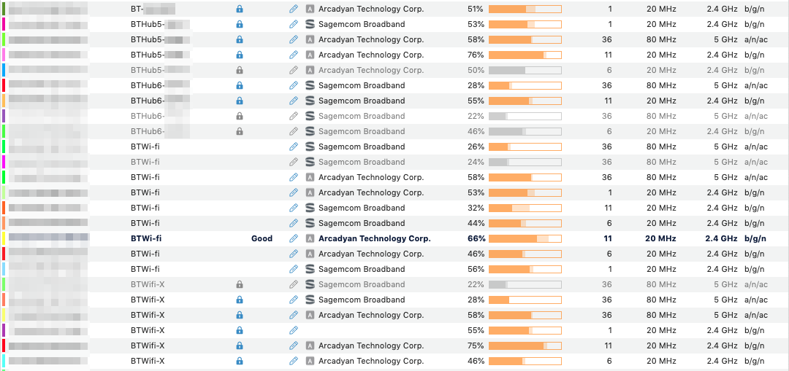

macOS 指定 BSSID
Contents
搬家到了一处便宜的地方以至于没有网络供应需要仰仗 BTWi-fi。而居民区中的 BTWi-fi 主要来自于邻居门家中品牌各异的无线路由器。这些热点的 ESSID 都叫“BTWi-fi”于是一不留神就会漂到卡的要死的邻居家去，怎么办呢？

由图可知所有的 5G BTWi-fi 都挤在 channel 36 而 2.4G 分布在 1、6、11 上。其中标有 Good 的这个 2.4G 热点经测试效果较好。
这个远古时代的提问下有人提到了 /System/Library/PrivateFrameworks/Apple80211.framework/Versions/A/Resources/airport 这个工具，但是据回答者说这东西从 10.6 开始就不管用了。经测试，果然在 10.14 上已经没有 BSSID 这个参数了。
找了一圈发现了 braineo/airport-bssid 这个工具可用。作者没有提供 binary 于是自行编译，得到如下错误：
1 2 3 4 5 6 |
/tmp/airport-bssid/Sources/bssid/utils.swift:8:21: error: 'requestAlwaysAuthorization()' is unavailable
locationManager.requestAlwaysAuthorization()
^~~~~~~~~~~~~~~~~~~~~~~~~~
CoreLocation.CLLocationManager:56:15: note: 'requestAlwaysAuthorization()' has been explicitly marked unavailable here
open func requestAlwaysAuthorization()
^ |
看了一眼代码里面明明有 availability guard，怎么就不行呢？
|
|
据猜测写了 guard 只能够让新版编译出来的 binary 拿到旧版跑，并不能在旧版上编译。我也没有找到编译时的 guard。反正是自己用，索性删掉好了。
于是试用：
1 2 |
> bssid connect aa:bb:cc:dd:ee:ff require a BSSID or pass a SSID by --ssid |
诶我不是写了 BSSID 吗？
看一眼代码
|
|
👉 requestSSID.isEmpty && requestSSID.isEmpty
改正，于是好使了。
至此，我们成功连接到了标有 Good 的热点，获得了勉强能用的无线网络接入。注意这并不能防止我们漂到同一个 ESSID 下的不同 BSSID 去，但在漂走以后可以主动申请回来。
Author SEIAROTg
LastMod 2020-10-04